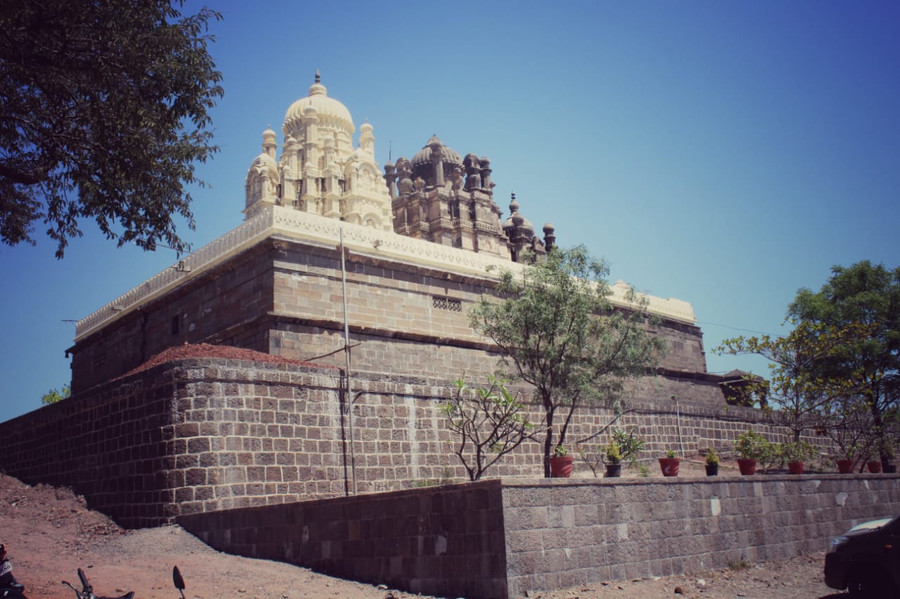
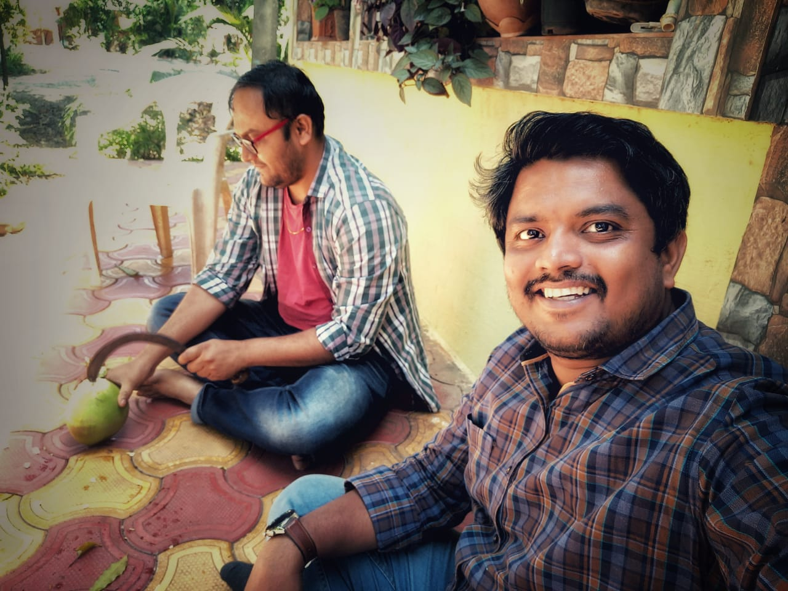
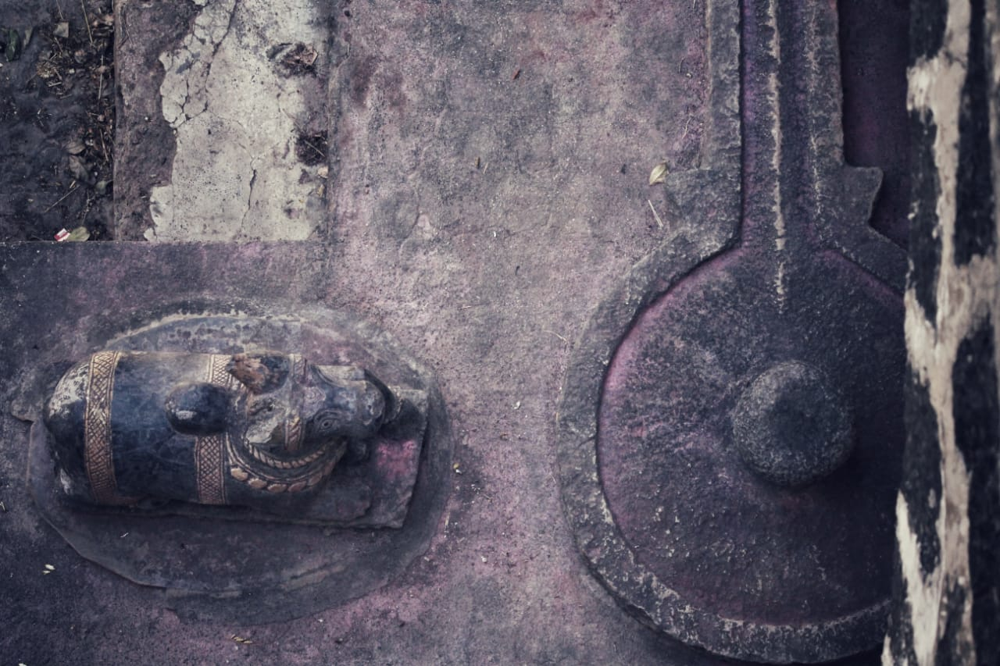
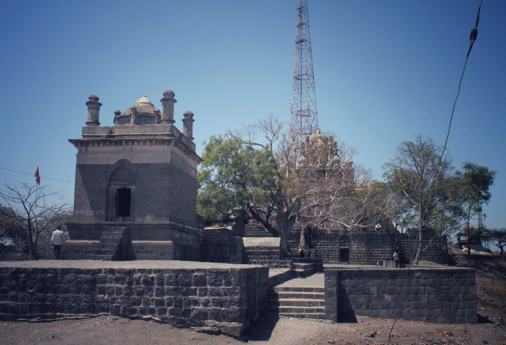
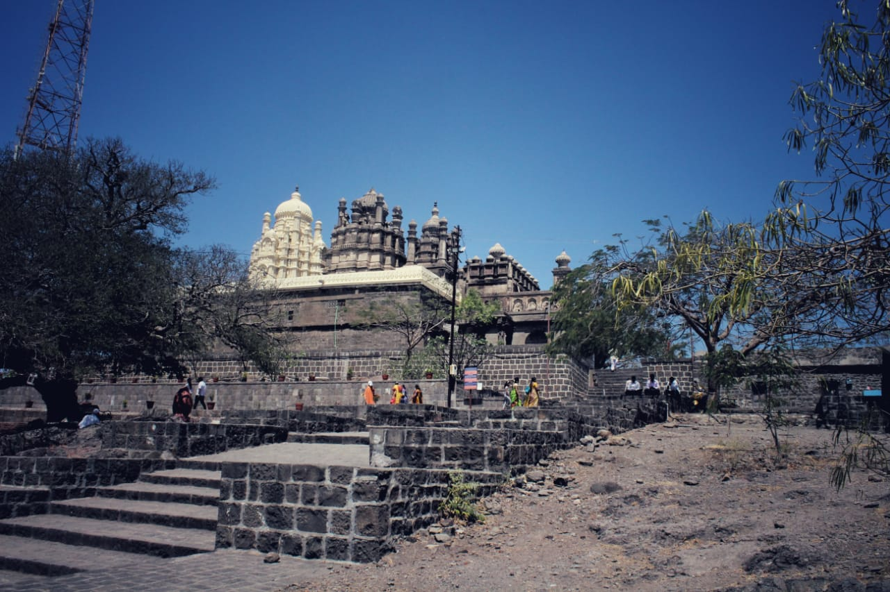
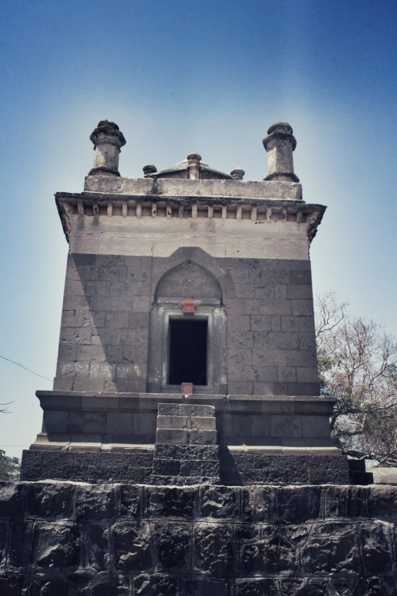
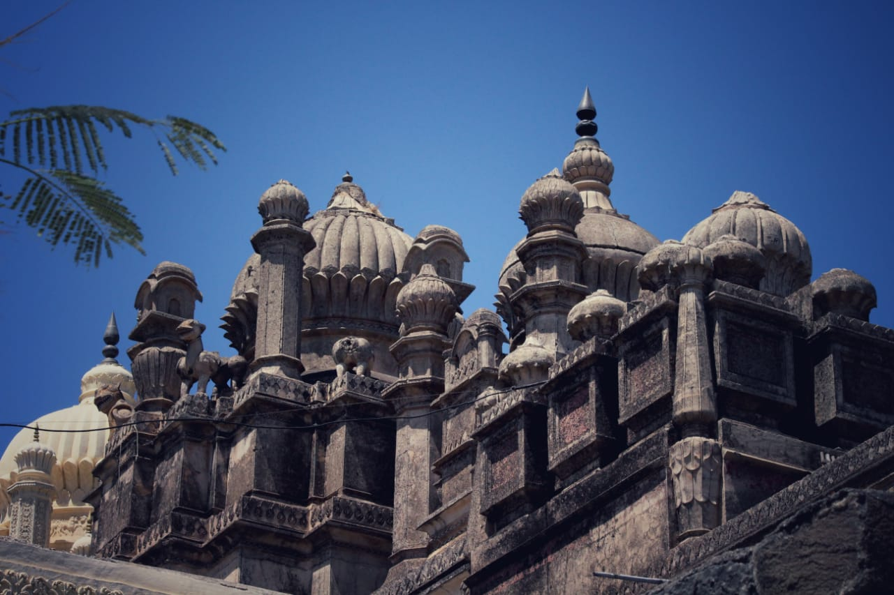
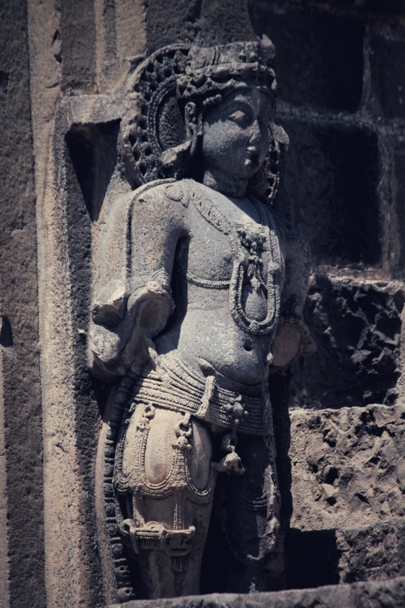
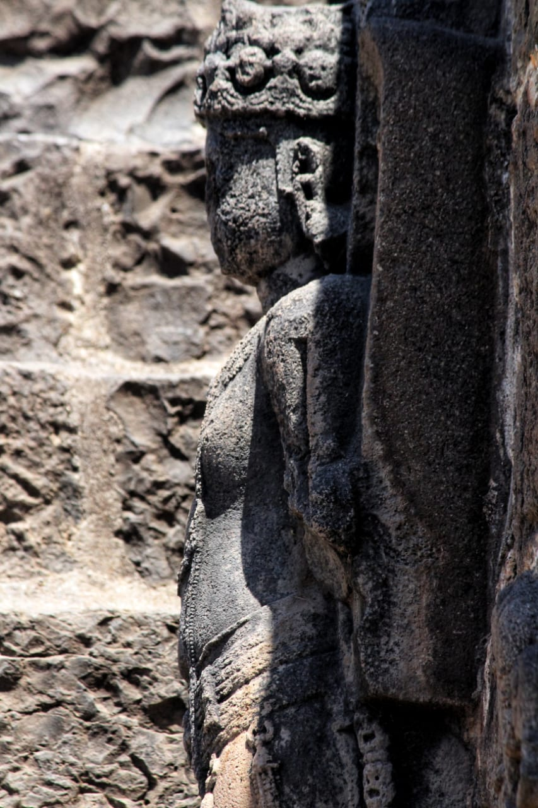

भुलेश्वर मंदिर ( Bhuleshwar Temple )

भुलेश्वर मंदिर / Bhuleshwar Temple
भुलेश्वर मंदिर... पुण्याजवळ असलेलं अति प्राचीन असे ऐतिहासिक मंदिर. पुणे जिल्ह्यातील सिंहगडावरून निघालेलया सह्याद्रीच्या रांगेत माळशिरस गाव शेजारी आहे हे मंदिर. असं समजल कि या जागेला मंगळगड असेही बोलले जायचे.. तिथं गेल्यावर तुम्हाला अंदाज येईलच कि या मंदिराच्या जागेला मंगळगड का बोलत असावेत.. तुम्हाला तिथं गडाचे अवशेष बघायला मिळतील.. प्रवेशद्वार आहेत.. एक बुरुज पण दिसला मला.. बुरुजच असावा.. फोटो काढायचा राहूनच गेलं ना राव !!! गडाचे फक्त अवशेष राहिले आहेत.
भुलेश्वर मंदिराबाबत एक दंतकथा प्रसिद्ध आहे. देवी पार्वतीने भगवान शंकरासाठी नृत्य केले आणि महादेवांना पार्वतीची भुरळ पडली. त्यानंतर त्यांचा हिमालयात विवाह झाला. महादेवाला पार्वतीच्या सौंदर्याने भूल पाडली, म्हणून ते ठिकाण भुलेश्वर नावाने ओळखले जाऊ लागले.
मंदिराच्या जवळ जात असतानाच दुरूनच मंदिराचा कळस आम्हाला खुणावत होता.. ( कळसाचे फोटो अपलोड केला आहे ).
मंदिराच्या जवळ गेल्या गेल्या त्यावर कोरलेल्या अद्वितीय मुर्त्यां मन आकर्षून घेतात.. संपूर्ण मंदिर हे दगडात कोरण्यात आलं आहे.. पायर्यांनी वर जाताना द्वारपालांच्या मूर्ती आपलं स्वागत करतात.. त्यांचा फोटो मी खाली अपलोड केला आहे... मंदिरामध्ये जाताना एक सुंदर घंटा दिसते , पितळेची असावी.. आपल्याला मंदिरात फोटो काढायला मनाई आहे. मंदिराच्या बाहेर २ गार्ड्स आहेत ते आपल्याला आधीच बजावतात फोटो काढू नका म्हणून.. पण खरंच मी नाही आवरू शकलो स्वतःला .. तिथला कोरीवकाम इतका अप्रतिम आहे कि आपसूकच तुमच्या तोंडून व्वा येईल ... तरीही मी स्वतःवर संयम ठेवून पुढे फोटो नाही काढले.. खर आहे ना.. फोटो काढून इतरांना दाखवण्यापेक्षा सगळ्यांनी प्रत्यक्ष जाऊन हे सगळं अनुभवलं पाहिजे... मी दुपारी २ च्या सुमारास मंदिरात गेलो होतो , बाहेर खूप ऊन पण तितकाच थंड होत मंदिर आतून ... भारीच वाटलं.. !!
मंदिरामध्ये जाळीदार खिडक्या होत्या ( गवाक्ष म्हणतात कदाचित ), त्यामुळे हवा खेळती राहत होती... मंदिरातल्या खांबांवरच सुरेख आणि इतका बारीक कोरीवकाम काम बघून त्या काळातल्या कारीगरांचा हेवा वाटून गेला..
मंदिराच्या गाभाऱ्यात शिवलिंग आहे.. पण त्या आधी पोहोचायच्या आधीच एक भल्या मोठया नंदीच दर्शन होत... मी २ मिनिट त्याच्याकडे पाहून, पाय पडून पुढे महादेवाच्या दर्शनासाठी सरकलो.. खूप प्रसन्न वाटलं जेव्हा दर्शन घेतलं .. महादेवाचं दर्शन घेऊन बाहेर आलो... मंदिराचं बाहेरून दर्शन घेतलं... मंदिरावर खूप भन्नाट वारा सुटला होता.. पण एक गोष्ट मनाला खूपच सतावत होती... मंदिरातल्या इतक्या सुंदर मूर्ती का बरं कोणी तोडल्या असाव्यात.. कारण तिथल्या सगळ्या मूर्तीचं खूप नुकसान केलेला दिसून येत होतं. तुम्हाला मी अपलोड केलेल्या फोटो मध्ये कदाचित ते जाणवेल.
कोणाला माहित असेल कि हे कोणी केलं तर मला नक्की सांगा.
पुरातत्त्व खात्याने ते मंदिर राष्ट्रीय संरक्षित स्मारक म्हणून घोषित केलेले आहे. खरंच खूप चांगली गोष्ट आहे.. खूप कमी मंदिरे आहेत जी आपल्याला त्या काळात घेऊन जातात. नक्की या मंदिराला भेट द्या.
आणि हा अजून एक राहून गेलं.. राहुल ( Rahul KalpnaRaghunath Garudkar ) ला धन्यवाद ज्याने वेळ काढून माझ्यासोबत मंदिर पाहायला आला आणि छान अशी माहिती सांगितली. आणि नंतर त्याच्या शेतात एक फेर फटका.. धम्माल दिवस 
भेटू परत पुढच्या प्रवासात..
- प्रशांत बळे
Some Clicks On Bhuleshwar Temple:
       
Prashant Bale
Photographer
Leave a comment